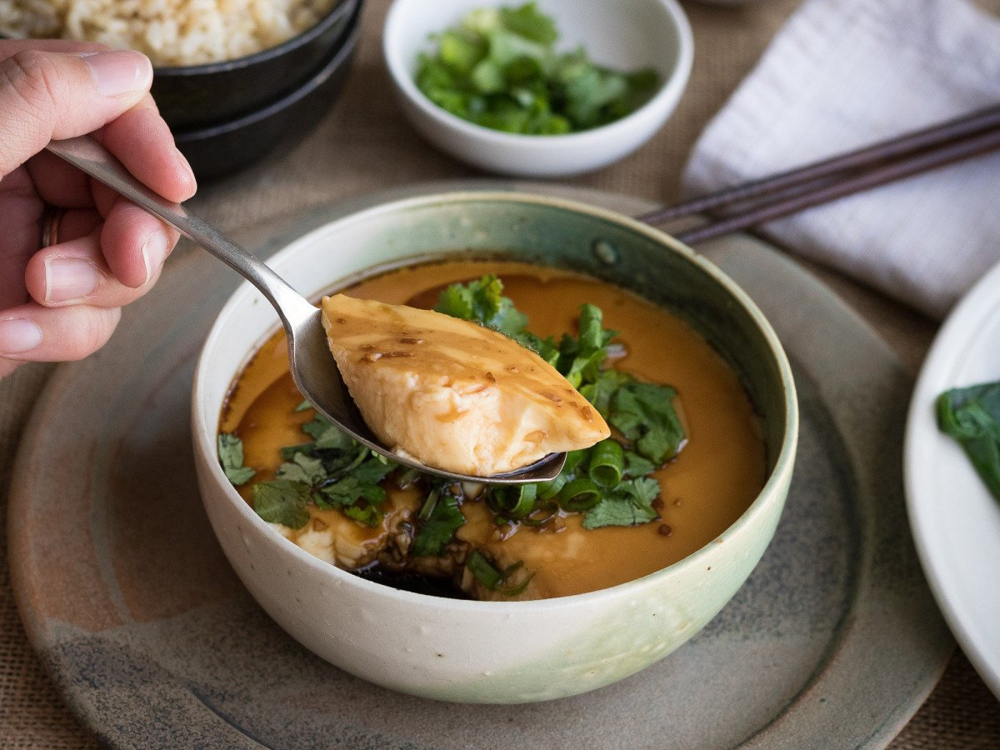

Mushroom Steamed Egg Recipe

Description
These silky, savory, and warming steamed eggs are a simple comfort food I grew up eating in Taiwan. There are many versions of the dish yielding different textures and flavors, but my recipe calls for just three ingredients: eggs, rehydrated dried shiitake mushrooms, and hon-dashi, or instant dashi powder. This recipe serves 4 as part of a larger meal, but you can easily make a snack-size portion using fewer eggs. I like to eat it with plain steamed rice and a stir-fried vegetable or as a side with congee.
To make steamed eggs at home you'll need a lidded pot that can fit a steaming rack or basket, or a Tatung steamer (a piece of equipment I can't live without)—plus a heatproof bowl. I suggest serving your perfectly jiggly eggs topped with a touch of soy sauce, chili crisp, and scallions to brighten them up, but you can be creative and experiment with XO sauce, black vinegar, and sacha sauce as well.
Ingredients
- 4 Dried whole shiitake mushrooms
- 4 Large Eggs
- 1 Tsp. instant dashi powder
- Soy sauce, scallion, chili crist to taste
Steps
- Place mushrooms in a medium bowl and pour in 1½ cups hot water to cover. Let sit 30 minutes to rehydrate.
- Squeeze out rehydrated mushrooms over bowl to catch soaking liquid; thinly slice mushrooms.
- Add eggs and hon-dashi to bowl of mushroom soaking liquid and whisk to combine. Strain through a fine-mesh sieve into a heatproof serving bowl (you will steam and serve from this bowl) to remove bubbles. Using a spoon, skim off any remaining bubbles, then gently sprinkle mushrooms over egg mixture.
- Place a steaming rack or basket in a large pot with a lid (make sure your bowl will fit in the pot when covered with lid). Pour in water to come 2" up sides of pot and bring to a simmer over medium heat. If using a Tatung steamer instead, add 1 cup water to steamer.
- Carefully place bowl with egg mixture into steamer and cover immediately, leaving lid slightly askew for steam to escape. Reduce heat to medium-low and steam, adjusting heat as needed to keep water at a gentle boil, until egg mixture is set and jiggly when shaken, 12-15 minutes. If using a Tatung steamer, place bowl with egg mixture in steamer and cover with lid, propping open with a folded paper towel. Press cook switch and wait until switch bounces back, about 15 minutes.
- Carefully remove bowl from steamer (use a hot dish clip or heatproof gloves). Top steamed eggs with soy sauce, scallion, and chili crisp as desired.